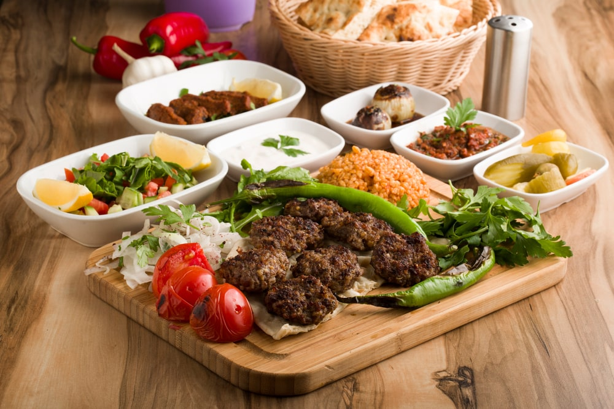
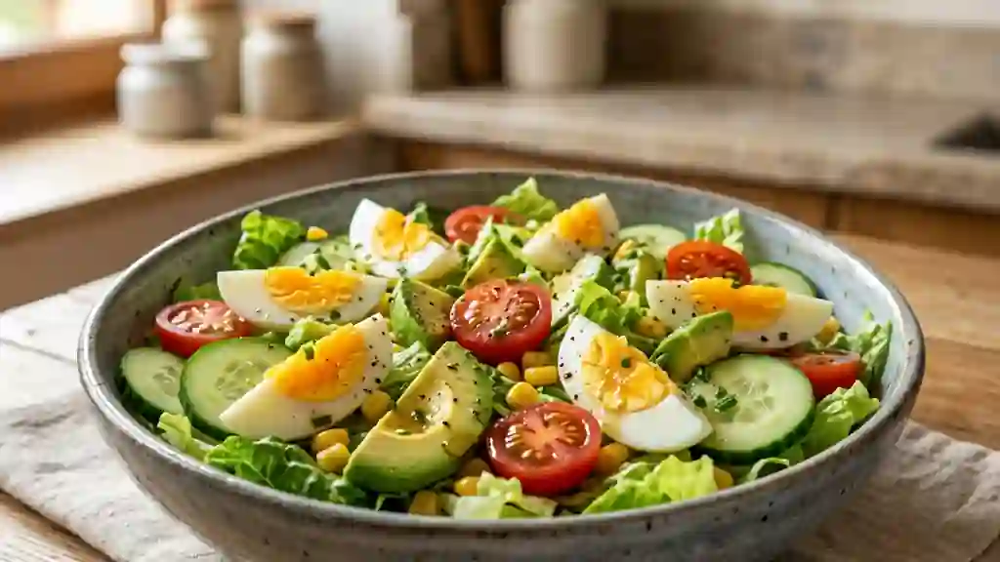
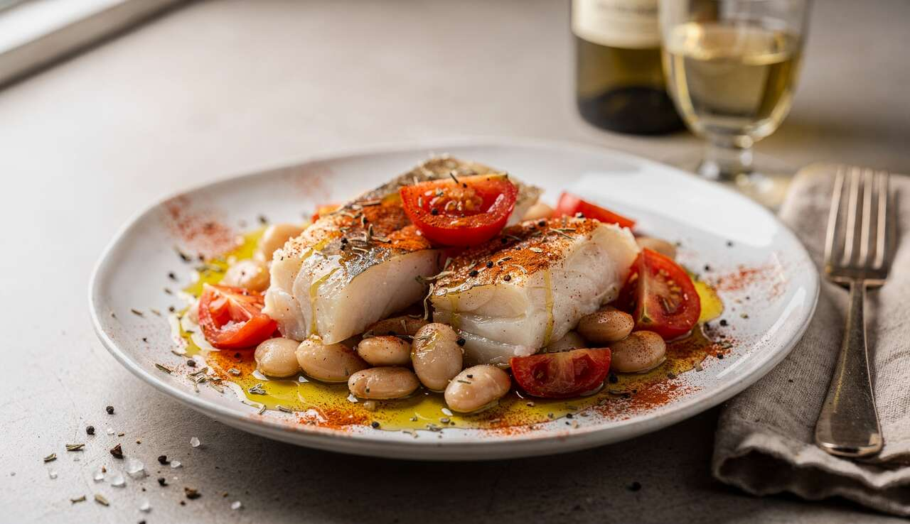
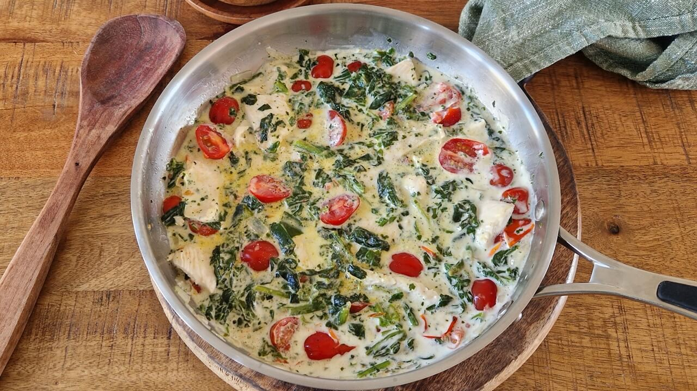
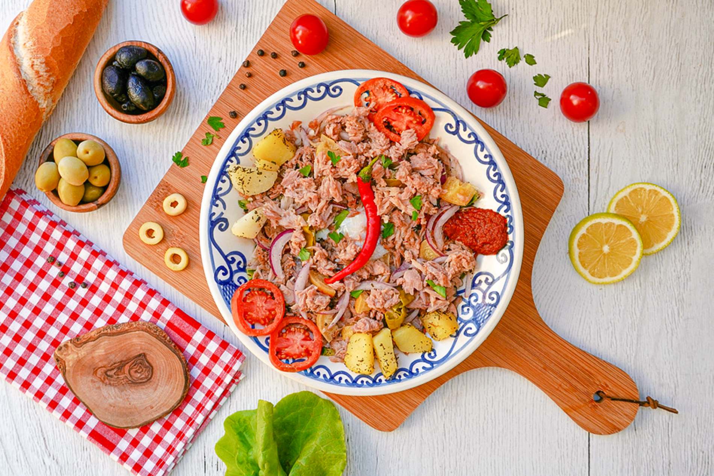

john tukey Sloppy joe
5.0(73) by John Kelber

Découvrez la vrai recette du Tiramisu italien. Avec une crème mascarpone ultras onctueuse.
15 minutes
Minimum 4 heures
6 personnes
Created by Melissa
Préparer le café et laisser le refroidir complétement dans une assiettes creuse.
Séparez les blanc des jaunes d'oeufs. Fouettez les jaunes d'oeufs avec le sucre. Incorporez la mascarpone au jaune d'oeufs et le sucre.
Montez les blancs en neige bien ferme a l'aide d'un fouet électrique puis incorporez-les délicatement à la crème mascarpone à l'aide d'une spatule.
Trempez rapidement les biscuits dans le café. Disposez-les dans un plat, ajoutez une couche de crème et recommencez. Soupoudrez le dessus de chocolat en poudre.
Placer le tiramisu au réfrégirateur pendant 4 heures minimum ou toute la nuit idéalement pour quil soit bien pris.

5.0(73) by John Kelber

3,0(94) by Danial Caleem

4,5(15,5) by Janet Smail

5,0(524) by Aleaxa Darchest
4,6(404) by Ben Kalier

3,9(629) by Janet Smail